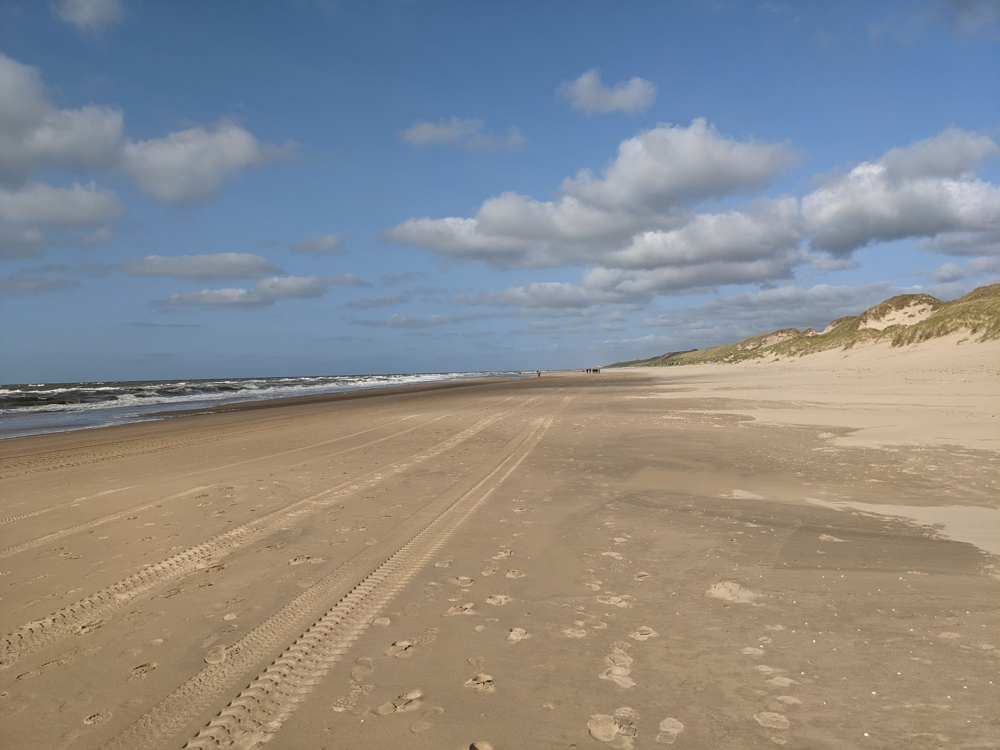
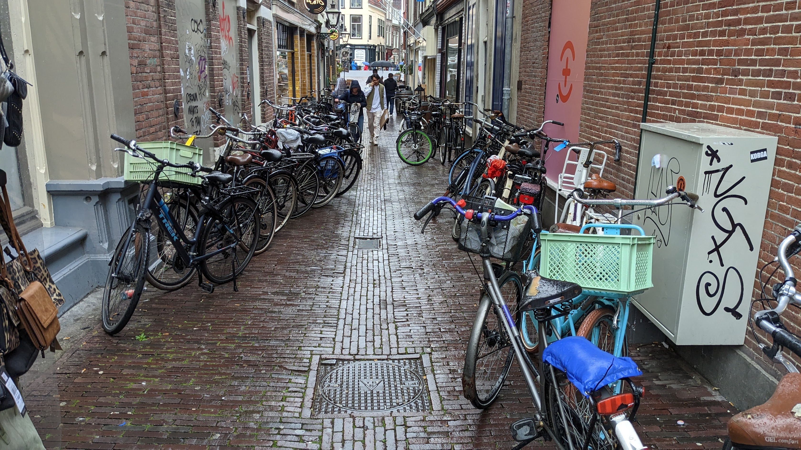
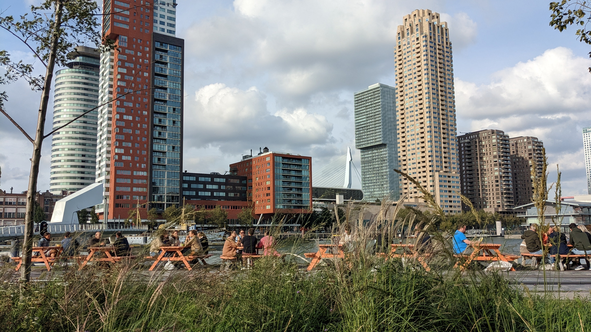
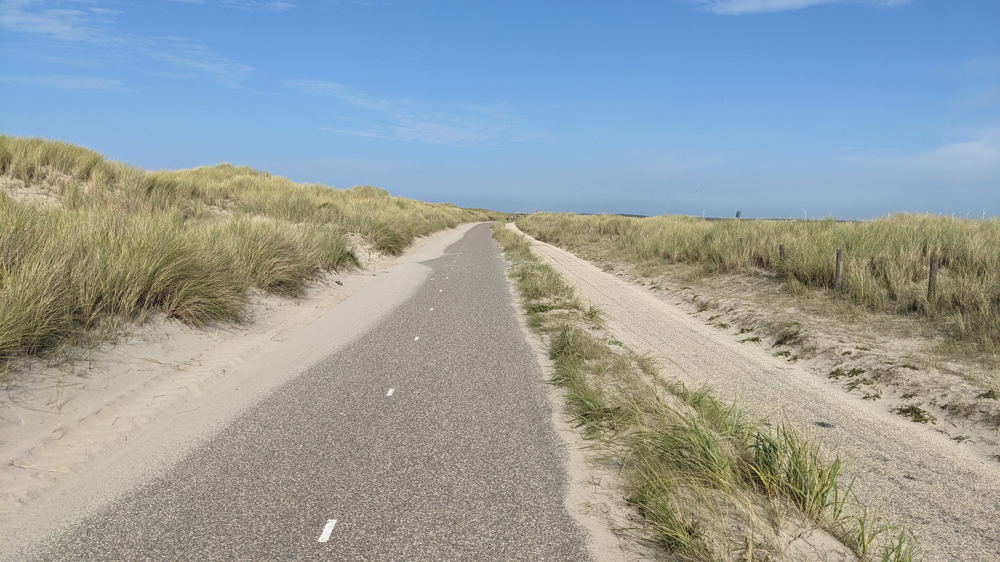
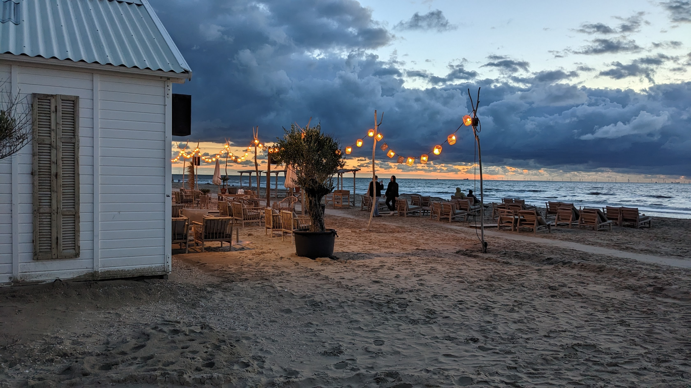
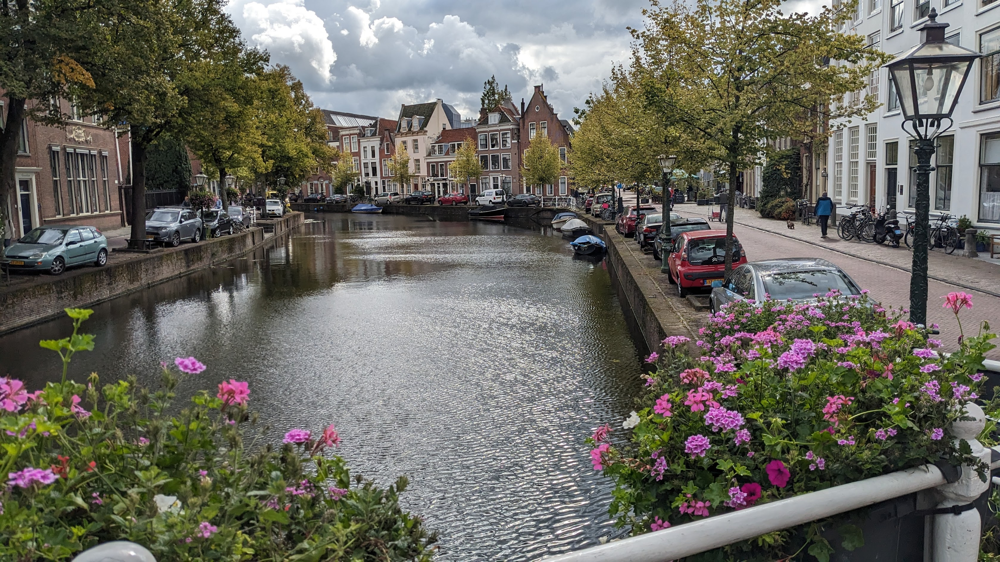

Holland - Endless beaches and a cycling paradise
Holland is a geographical region and former province on the western coast of the Netherlands.[3] From the 10th to the 16th century, Holland proper was a unified political region within the Holy Roman Empire as a county ruled by the counts of Holland. By the 17th century, the province of Holland had risen to become a maritime and economic power, dominating the other provinces of the newly independent Dutch Republic.

Endless beach in Holland

Cycling is very popular in Holland

Rottedam skyline

Cycling in the sand dunes

Beach house in Holland

Water is close everywhere